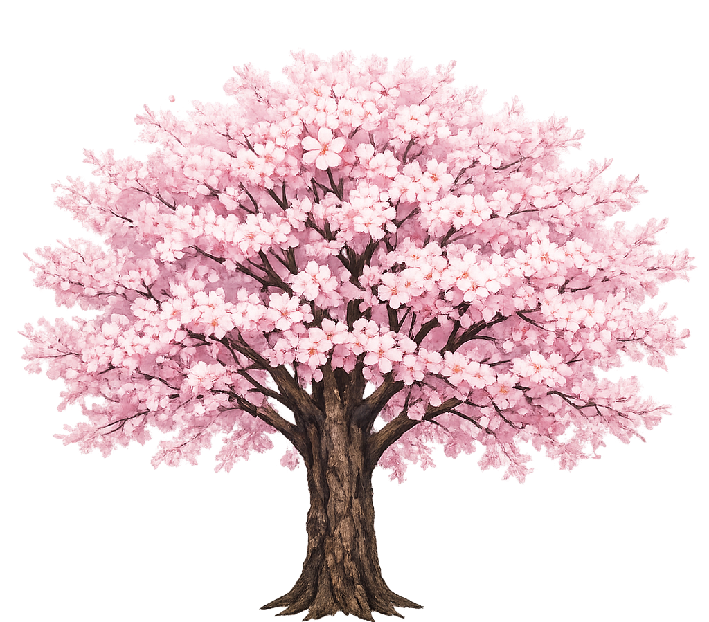

Sakura
Cuando florece el sakura, Japon respira primavera
Durante pocas semanas, los cerezos pintan de rosa parques y avenidas. Es el momento del hanami: parar, mirar y celebrar bajo los petalos.

Tres paradas esenciales
Lugares donde la arquitectura no grita: acompaña.
Kyoto
Kiyomizu-dera
Madera suspendida sobre la ciudad. Un mirador tranquilo cuando cae la luz.
Kyoto
Kiyomizu-dera
Madera suspendida sobre la ciudad. Un mirador tranquilo cuando cae la luz.
- Mejor momento: atardecer (cielo limpio)
- Qué mirar: la terraza de madera y el perfil de Kyoto
- Detalle: linternas y pasillos de madera oscura
Consejo: baja el ritmo. Mira primero el conjunto, luego los detalles.
Nara
Tōdai-ji
Escala monumental y silencio pesado. La piedra marca el paso.
Nara
Tōdai-ji
Escala monumental y silencio pesado. La piedra marca el paso.
- Mejor momento: mañana temprano
- Qué mirar: estructura, puertas y proporción
- Detalle: contraste entre madera y sombra
Consejo: no corras. Este templo se entiende por escala.
Kamakura
Hase-dera
Jardines, escaleras y mar al fondo. Un templo que respira despacio.
Kamakura
Hase-dera
Jardines, escaleras y mar al fondo. Un templo que respira despacio.
- Mejor momento: tarde suave
- Qué mirar: jardines y líneas del tejado
- Detalle: caminos y texturas de piedra
Consejo: sube con calma: el recorrido es parte del templo.